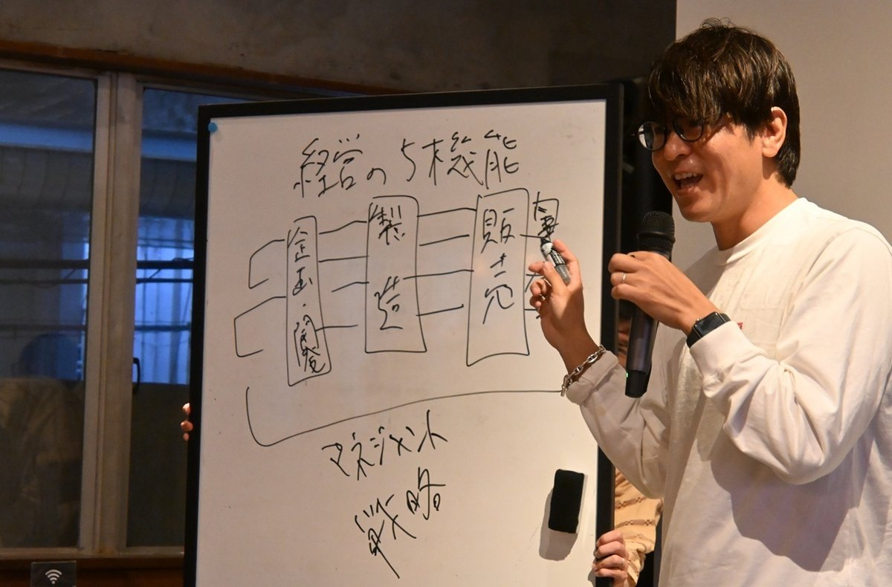
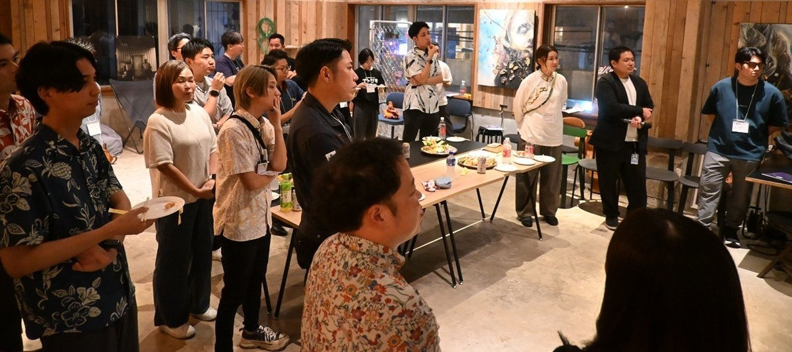

受け継ぐ、その先へ。 / OKINAWA
家業の次を、
沖縄の仲間と。
ひとりで抱えていたことが、
誰かと話すと、次の一歩に変わる。
学び、動き、高め合う。アトツギのためのモアイ。





NEXT MOAI
次のモアイで、
会いましょう。
01 / ABOUT US
継ぐって、
ひとりじゃない。
家業をより良くしたい。
その想いを持つ、ドゥシと出会う場所。
沖縄アトツギモアイは、後継者たちが有志で立ち上げたコミュニティです。先代との関係、社内での信頼づくり、新しい事業への挑戦。同じ立場だからこそ話せることがあります。
先輩の経験に学び、自分の目標を言葉にし、家業で試してみる。その一歩を持ち寄り、互いの成長につなげていきます。
沖縄にいる人にも、県外で家業の未来を考えている人にも。「沖縄で継いでみたい」と思える仲間の輪を。
立ち上げの想いを読む ↗LEARN TOGETHER, MOVE FORWARD.
話して終わらず、
明日の家業へ。
先輩の失敗談も、仲間の小さな挑戦も。
次の一歩を踏み出すヒントになる。
02 / JOURNAL
モアイの活動ノート
活動レポートは公式noteからお読みいただけます。
MEDIA
メディア掲載
モアイの活動を、紹介いただきました。
家業の未来を語り合う、沖縄の若手アトツギたち
第1回沖縄アトツギモアイの開催が、琉球新報で紹介されました。
琉球新報の記事を読む ↗記事全文の閲覧には購読・ログインが必要です。03 / SUPPORT GUIDE
挑戦を支える、
情報とつながる。
家業の次の一歩に使える支援を。
詳しい条件・募集状況は各機関の公式案内へ。
FROM OKINAWA, TO THE NEXT STAGE.
沖縄のアトツギから、
全国への挑戦を。
家業の強みと、自分のアイデアで未来を描く。
アトツギ甲子園に挑む仲間を、沖縄から増やしていきたい。
モアイでの学びを、次のステージへつなげます。
JOIN THE MOAI
まずは、
話してみませんか。
家業を継ぐ予定の方、承継して3年以内の方へ。
初めての参加も、県外からのお問い合わせも歓迎です。
okinawa.atotsugikai@gmail.com
まだ家業に入っていなくても参加できますか？
事業承継予定の方も対象です。現在の状況を添えて事務局へご連絡ください。
イベントの開催情報はどこで見られますか？
このサイトと公式noteでお知らせします。LINEグループへの参加は事務局へお問い合わせください。
支援機関として関わりたいです。
協賛、登壇、支援情報のご提供などについて、事務局へご相談ください。